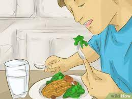

Fruits and vegetables are among the most important foods for supplying us with enough amounts of vitamins, minerals, and fibre. At least 5 servings per day should be our goal.
For example, a glass of fresh fruit juice for breakfast, an apple and a piece of watermelon as snacks, and a variety of veggies at each meal.
2. Have a balanced diet
Make your meals more interesting.Fruit, vegetables, legumes, nuts, seeds, and whole grains are all good sources of fibre. Every day, eat at least 5 servings (400 grammes)
of fruits and vegetables, preferably fresh and seasonal varieties.
If you're not a vegetarian, fatty fish should be part of your diet since omega-3 fatty acids can help avoid inflammatory disorders like heart disease.
Reduce your salt intake. You should not consume more than 1 gramme of salt every day (or 1 teaspoon). When cooking your meal, use less salt, restrict the amount
of high-sodium condiments like soy sauce, and avoid salty snacks. You can lower your risk of high blood pressure by reducing the quantity of sodium in your diet.
3. Stay hydrated
Adults must consume at least 1.5 litres of water every day! Or even more if it's extremely hot outside or they're actively active. Water is, of course, the best source; we can use tap or mineral water,
sparkling or non-sparkling, plain or flavorful. Fruit juices, tea, soft drinks, milk, and other beverages are all OK - on occasion. Drink at least 8 glasses of water per day. Water is required for regular bowel
function, healthy muscular performance, immunological and skin health, and is made up of 80% of your body. Dehydration, weariness, headaches, dry skin, and a weaker immune system can all result from not drinking enough water.
4. Limit alcohol
Excessive alcohol use might result inliver damage and possibly cancer in the long run.
Alcohol addiction can also impair judgement, resulting in accidents and injuries.

5. Manage stress
Many disorders, ranging from migraines to heart problems, are known to be triggered by stress. Watching a hilarious movie, drawing, going for long walks, working in the garden,
listening to music, or soaking in a bubble bath are all good ways to reduce stress.Talking to your friends and family members is another
great technique to get rid of negative ideas. Sharing how you're feeling with individuals you can trust will help you relax and de-stress right away.
6. Get moving
The idea is to be physically active, whether it's via walking, jogging, swimming, or completing an at-home Pilates session. Exercise not only keeps you in shape, but it also lowers your chances of getting ailments as a result of a sedentary lifestyle.
Physical activity is beneficial to people of all sizes and health issues. It aids in the burning of excess calories, is beneficial to the heart and circulatory system, preserves or grows muscular mass, aids in concentration, and enhances general health and
well-being. We don't have to be Olympic athletes to begin moving! 150 minutes of moderate physical activity each week is recommended, and it may simply be included into our everyday routine.